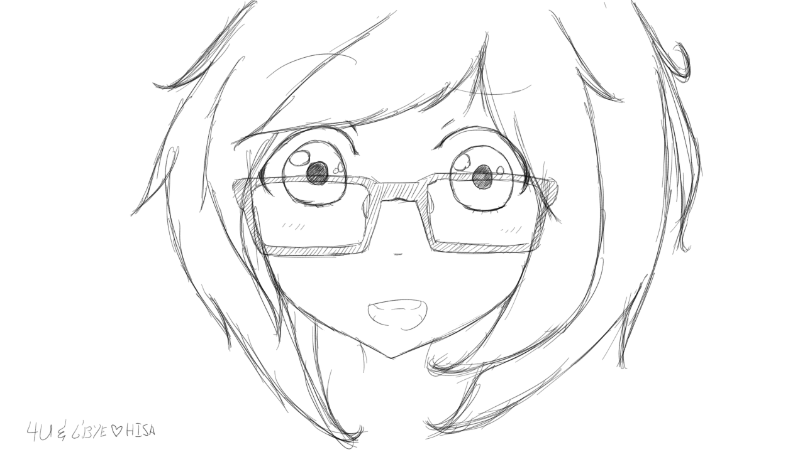

<p>
  Claire’s Cybersecurity Corner is run by Clarina A. 
  </br>
  She is a 20-something from Ontario, Canada. 
  </br></br>
  Her educational background includes Computer Science, Cognitive Science, and Network Security.
  </br>
  Claire has a Graduate Certificate in Network Security and a Bachelor’s degree in Computing (Honours) with a specialization in Cognitive Science.
  </br>
  Certification: CompTIA A+, CompTIA Security+
  </br>
  She enjoys video games, golfing, travelling, fashion, model trains, talking in third person, makeup, and discussing the future of AI.
  </br></br>
  This site was made with Jekyll and hosted on Github Pages. Gooooo, Github!
  </br>
  Also, here’s a drawing of me made by a friend:
  </br></br>
  
</p>
